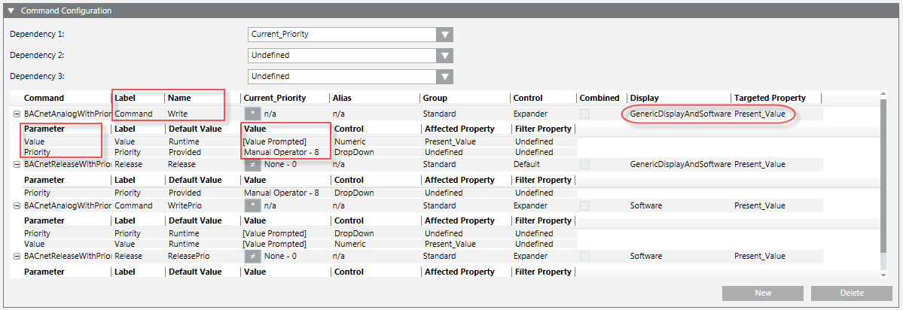
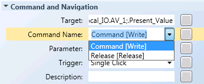
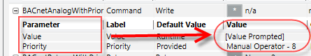
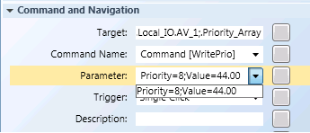
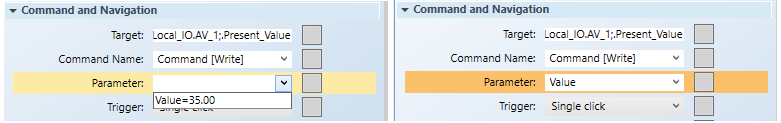
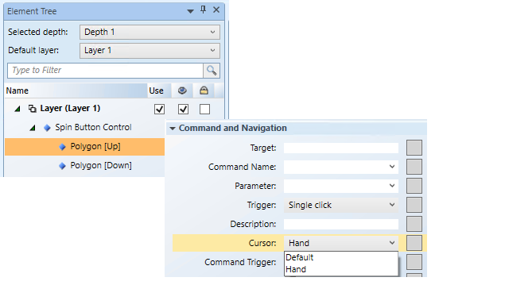

Command Control Configuration
The Graphics Editor allows you to create input elements for different data types and their properties, which allows you to input data as command parameters and then send a command from within the graphic.
Review the topics in this section prior to configuring your command control, as you will need to gather information from the Models and Functions application. Additionally, you must decide whether you will create a stand-alone or grouped Command Control.
Selectable elements, for example a thumb on a slider, can also be configured to display a hand control rather than the default cursor.
About Command Control Configuration
In order to configure an element or command Symbol to send a command, the following information must be known about the object or data point that receives the command:
- Object to command
- Property of the object to command
- Command name
Optionally, the names and values of the command parameters
Object Property Information in the Command Configuration Table
After selecting the object or data point in System Browser to command, for example, Analog Value, navigate to the Models and Function application, and select the property of the object you want to command.
Once you have selected the property, for example, Present_Value, the Command Configuration table displays the command information related to the object type.
It is also important to note that only commands designated for “Generic Display” are commandable.

Label and Name
After dragging a property form the Extended Operations tab or System Browser to the Target property in the Command and Navigation property tab in the Graphics Editor, the drop-down is filled with commands that have been defined in the library for that object model. The commands are then displayed in the format: Label[Name].

- Label - This information is translatable, and is not required to command and element. However, if the label is present, then the Name (below) must be between square brackets [ ].
- Name – This is the command name and it is not translatable. This is mandatory to command objects in Graphics.
Parameter
After selecting the Command Name property in the Graphics Editor, the drop-down for the Parameter field is populated with the appropriate command parameters. This is the prompted command information that is required and sent as context to the new primary selection based on the Target.

Please note the following:
- The name of the parameter is not translatable.
- The numeric value must be formatted without localization (en-US)
- Multiple parameters are separated by a semi-colon “
;” - The value is the default value at that time.
The value can always be customized by typing a value.
The Parameter information is entered in the Graphics Editor‘s Command Control properties:

and, in the Command and Navigation properties:

When entering the Value of the Parameter field, it can be hard coded to a specific value or left without a value to create a variable value:

Hand Cursor Configuration for Selectable Elements
If your command control has a selectable element, for example, the thumb on a slider, and you want the Hand cursor to display instead of the Default cursor when the mouse cursor is over the selectable element, you must configure the cursor on the sub-elements (child) of the command control. This applies to the following command controls:
- Slider – The thumb is the selectable child element.
- Spin Button – The
UpandDownelements are the selectable children. - Rotator – The thumb is the child element
- Group Commands – This could be any number of elements.

Stand-Alone Versus Group Command Controls
Commands can be grouped into two major categories:
- Stand-Alone - A single element with a command associated to it, This element can be a simple element that sends a command, or a Command Control element that stands alone and sends the command. Examples of Stand-Alone commands are:
- Command with no prompted parameters. For example, a button.
- Command with one prompted command parameter. For example, a drop-down menu.
- Command with hardcoded parameter values. For example, a button that commands to a single value.
- Grouped - Two or more elements form a Command Group. This Command Group still executes commands of one Target property. When to use a Command Group:
- Command requires a Send button with at least one prompted command parameter. A user is required to perform a separate action to send the command.
- Command with multiple command parameters across different command controls. For example, a Numeric control for the Value; a Numeric control for the Priority, and a Send button to command your Priority Array property. A user edits the value of all the parameters individually and then sends the command with all the values using a Send button.
- Command with multiple representations for the same command parameter, such as a Numeric Control plus a Slider.
Related Topics
For background information on symbols, see:
- Element and Graphic Properties
- Symbol Basics
For workspace overview, see the following:
For related workflows and procedures, see Preparing to Create Command Controls from a Graphic.